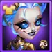

Peech headlines this Champion's Gallery rotation with her Singularity Skin+. Plan for 90,000 Ascension Crests for the base skin and another 300,000 for Skin+, while collecting Kendle's separate mission rewards.

Ascendant Glory Guides
 Event Group Overview
Event Group Overview Rising Legend
Rising Legend Trial of Legends
Trial of Legends Spark of Glory
Spark of Glory Champion's Gallery
Champion's GalleryKendle Rewards: Spark of Glory Mission Milestones
Completing Rising Legend and Trial of Legends missions advances the corresponding Spark of Glory reward tracks. Along the way, rewards include Kendle Soul Stones, Adventure Energy, Season Points, and other resources.
| Mission Track | Completed Missions | Reward |
|---|---|---|
| Rising Legend | 240 | Kendle's Angel Skin: +106,645 Health at maximum level |
| Rising Legend | 300 | Red Equipment Recipe Chest: choose the equipment recipe; this reward is not random |
| Trial of Legends | 45 | Kendle's Blazing Skin |
| Trial of Legends | 75 | Kendle's second talisman, Talisman of Pain |
The 45-mission reward is the Blazing Skin. Do not confuse it with Blazing Skin+, whose maximum Magic Attack bonus is 21,300.
Why Talisman of Pain Matters
Talisman of Pain adds 8,000 Crushing and up to 6,600 Magical Critical Hit Chance through three slots of 2,200 each. These are talisman bonuses, not Kendle's total stats.
- Crushing: increases the hero's own physical, magical, and pure damage against enemies below 50% Health. It does not increase damage from allies' abilities. The bonus is calculated as Crushing / (Crushing + target's main stat) × 100%.
- Magical Critical Hit Chance: applies only to magical damage. A magical critical hit deals 2.5 times regular damage; it does not make physical or pure damage critically hit. The chance is Magical Critical Hit Chance / (Magical Critical Hit Chance + enemy's main stat) × 100%.
The target's main stat is Strength, Agility, or Intelligence. For Kendle's builds and other skins, see the Kendle guide.
Where to Spend Your Ascension Crests
If you do not own Peech, her Soul Stones are a top priority. For F2P accounts, consider her base Singularity Skin at 90,000 Crests. The full base-plus-upgrade path costs 390,000 Crests, so players who cannot reach it should compare relics, Crow resources, and Skin Stones before spending.
First Priority: Peech Soul Stones
Peech cannot be farmed in Campaign or purchased in permanent shops. Special events and the Heroic Chest are her acquisition routes, making this rotation valuable for beginners who have not unlocked her.
My recommendation is to aim for at least four stars, then consider the Evolution Booster for five and six stars to save resources. Read the Evolution Booster guide before using a book.
Peech Character Evolution Priority Guide

Peech Guide - Hero Wars Alliance
Peech's Singularity Skin and Skin+
Event missions provide currency toward the 90,000-Crest base skin. After acquiring it, you can buy Skin+ for another 300,000 Crests. A player starting without the base skin needs 390,000 Crests in total.
| Version | Ascension Crests | Armor Penetration at Level 60 |
|---|---|---|
 Base skin | 90,000 | 10,650 |
| 300,000 after buying the base skin | 21,300 total, not an additional 21,300 |
Unlocking the skin does not immediately grant its maximum bonus. Its level-60 progression requires 50,410 Agility Skin Stones.
Alexandre's View
Peech is already excellent without this skin. The extra Armor Penetration improves her damage potential, and I enjoy pairing her with Kayla and Aidan. In my opinion, this upgrade could put her in SS tier. See the Peech guide for her skills and skin priorities.
For F2P players planning to build Peech, the base skin is worth considering because it saves a future Skin Certificate or approximately 5,000 Skin Stones. If she is not part of your planned teams, you can spend the Crests on other resources and wait for the base skin's expected availability after roughly five months.
Skin+ is harder to target later: after the expected five-month wait, it enters the Heroic Chest pool with other Skin+ rewards. The 400-opening Skin+ system does not guarantee Peech. Daily free and advertisement openings help, but paid openings can require substantial Emerald spending.
A Currency Price Still Requires a Budget
Being purchasable with event currency does not make Skin+ accessible to every account. Do not spend toward a 390,000-Crest path without checking whether your saved resources and mission rewards can cover it.
The 80,000-Emerald Skin+ Milestone
The event's Emerald-spending mission also offers another Skin+ at 80,000 Emeralds spent. This is separate from Peech's 300,000-Crest shop upgrade. Check the reward shown in the mission before budgeting; the event notes do not identify which Skin+ this milestone awards.
Alexandre's Outland Chest Strategy
Use the 55% Outland Chest discount when available if chest opening fits your budget. Outland Chests provide Skin Stones, skins, Skin Certificates, and Outland Coins, alongside the event's associated Crest rewards. Emeralds spent on these openings also advance the Emerald-spending mission.
The estimates below concern Outland Chests. Heroic Chests are the separate source discussed above for heroes and later Skin+ access.
| Outland Chests | Estimated Emerald Cost | Estimated Ascension Crests | Planning Target |
|---|---|---|---|
| 100 | 3,375 | 4,850 | Discounted batch |
| 2,370 | 79,987 | 114,945 | Near 80,000 Emeralds; additional spending is needed to reach the mission |
| 6,100 | 205,875 | 294,020 | Near the Skin+ upgrade price |
| 6,186 | 208,778 | 300,021 | Skin+ upgrade only; does not cover the 90,000-Crest base skin |
These are planning estimates, not a fixed Crest payout per chest. Actual totals depend on mission cycles, free openings, and other rewards. Confirm your in-game totals before buying additional batches.
Priorities If You Cannot Reach 390,000 Crests
After considering Peech Soul Stones and her base skin, use your remaining budget on resources that improve teams you actually use.
- Kendle and Miu Relic Shards: these are higher priorities in this rotation. My preference is Kendle at the moment.
- Crow's weapon and book artifact fragments, plus his Soul Stones: these are high priorities if you are building him. Crow's Soul Stones are especially scarce because the Evolution Booster cannot yet be used for him in this rotation.
- Skin Stones: new skins continually create demand, making these a useful destination for remaining Crests.
Drayne and Somna relics have a lower purchase priority because their shards can be obtained from the free Relic Chests awarded by the weekly Guild VS event. Consult the Relic guide before spending Crests on resources available through that route.
What I Would Avoid Buying
In this rotation, I would put Miu and Kendle Soul Stones, their artifact fragments, and Hero equipment behind the priorities above. Their relics are a separate purchase decision: Kendle and Miu Relic Shards remain recommended.
Equipment can be farmed with Energy while also earning Gold, experience, and progress in Energy-spending missions. Reserve rare Ascension Crests for purchases that are harder to replace through regular play.
Champion's Gallery Purchase Order
| Purchase | Who Should Consider It | Reason |
|---|---|---|
| Peech Soul Stones | Players missing Peech or evolution stars | Limited acquisition routes; aim for four stars before planning Evolution Boosters |
| Base Singularity Skin | F2P and low spenders planning to build Peech | 90,000 Crests; saves a later skin-unlock resource cost |
| Singularity Skin+ | Committed Peech teams with enough resources | 300,000 additional Crests; 21,300 total Armor Penetration at maximum level |
| Kendle and Miu Relic Shards | Players building these heroes | Kendle is my stronger priority this rotation |
| Crow weapon/book artifacts and Soul Stones | Players unlocking or improving Crow | Scarce resources with high priority for his development |
| Skin Stones | Accounts with useful skins to level | Ongoing demand |
| Drayne and Somna Relic Shards | Only if accelerating those heroes is essential | Free weekly Guild VS Relic Chests provide an alternative |
| Equipment; Miu/Kendle Soul Stones and artifacts | Lower priority for this budget | Prefer the purchases above and farm equipment with Energy |
 Kendle Guide
Kendle Guide Crow Guide
Crow Guide